determinantes: do volume da caixa ao filtro do pixel
O primeiro seminário usou a imagem digital como palco para ensinar geometria analítica. Este pega um número só — o determinante — e mostra que ele responde duas perguntas ao mesmo tempo: quanto espaço as setas geram, e de que lado elas o geram.
Duas portas levam ao mesmo número: uma o define com rigor e não serve para calcular; a outra o constrói a partir de três fatos pequenos. A prova vem do pixel.
Autor · Mateus Felipe Alkimim Pereira
Coautora · Sara Catiele Nogueira Pereira
Orientador · Rosivaldo Antônio Gohnan
Do seminário anterior, quatro coisas seguem valendo e serão usadas sem reapresentação:
este deck cobra exatamente a última: para entender determinante é preciso ler a matriz como operador — alguém que pega o espaço e o deforma.
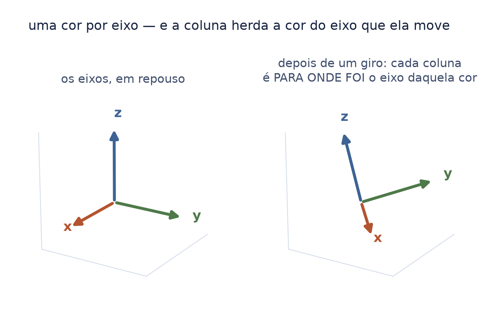
Antes de qualquer conta, uma combinação visual que vale até o fim:
Quando uma matriz for operador, cada coluna dela é para onde foi o eixo daquela cor. Assim a figura se lê sozinha: "o eixo terracota foi parar ali; o azul quase não se mexeu".
isso resolve uma ambiguidade que o deck anterior carregava: lá, a mesma cor às vezes marcava um ponto e às vezes um eixo transformado. Duas gramáticas de cor sem aviso fundem "matriz = dados" com "matriz = operador".
A folha anterior combinou as cores. Esta combina as letras — porque a matemática escreve com convenções que quase nunca são ditas, e ditas elas deixam de ser barreira.
| \(A\), \(M\), \(I\), \(H\), \(J\) | maiúscula inclinada — uma matriz: uma tabela de números |
| \(a_{ij}\), \(a_1\) | a minúscula é a entrada da maiúscula: \(a\) mora dentro de \(A\). O índice embaixo é endereço — linha \(i\), coluna \(j\) — nunca potência |
| \(L_i\) | a linha \(i\) da matriz. Lê-se "ele i" |
| \(\sigma\), \(\lambda\) | letra grega — o coadjuvante: o embaralhamento e o número que multiplica. Lê-se "sigma", "lambda" |
| \(\det\), \(\operatorname{sgn}\) | letra em pé — nome de operação, não letra que vale um número. É o que separa \(\det\) de três letras multiplicando |
| \(n\) | a ordem da matriz: quantas linhas (e colunas) ela tem |
| \(|\det A|\) | uma barra: o número sem o sinal. Duas barras seriam comprimento — não aparecem aqui |
| \(\mathbb{R}\) | letra vazada — todos os números reais |
Lá, \(A\) e \(B\) eram pontos do espaço. Aqui \(A\) é uma matriz. A forma da letra é a mesma; o que ela nomeia, não — e é a folha que diz qual dos dois.
O que vem a seguir usa duas palavras o tempo todo, e as duas foram construídas no episódio anterior deste arco — o G1, "Contar sem listar":
| permutação | uma casa por linha, sem repetir coluna — e há \(n!\) delas num tabuleiro \(n \times n\) |
| paridade | quantas trocas até a ordem natural; o número muda com o caminho, a paridade não |
Uma permutação de paridade par chama-se par; de paridade ímpar, ímpar. É só disso que este seminário precisa.
Vale reter por que a paridade não depender do caminho é importante aqui, e não lá: se ela dependesse, cada parcela do determinante poderia receber sinal \(+\) ou \(-\) conforme quem fizesse a conta — e o determinante não seria um número, seria uma opinião.
Este seminário ensinava as duas coisas em duas folhas próprias até 2026-08-25. Elas saíram quando o G1 nasceu: o mesmo conteúdo, no episódio onde ele é o assunto e não o preâmbulo.
Chama-se determinante da matriz \(A\) de ordem \(n\) o número real
\[\det(A) = \sum_{\sigma} \operatorname{sgn}(\sigma)\, a_{1\sigma(1)}\, a_{2\sigma(2)} \cdots a_{n\sigma(n)}\]"determinante de A é igual à soma, sobre sigma, do sinal de sigma vezes: a-um-sigma-de-um, vezes a-dois-sigma-de-dois, e assim por diante até a-ene-sigma-de-ene".
| \(\sum_{\sigma}\) | o símbolo novo aqui: o sigma grande manda somar, e o \(\sigma\) embaixo dele diz o que varia — uma parcela para cada permutação, todas as \(n!\). Lê-se "soma sobre sigma" |
| \(a_{1\sigma(1)}\) | a entrada da linha 1, na coluna que \(\sigma\) escolheu — a casa do tabuleiro |
uma parcela por tabuleiro. Em cada parcela, multiplique as \(n\) casas escolhidas e ponha na frente o sinal daquela escolha. Some tudo. É a definição inteira.
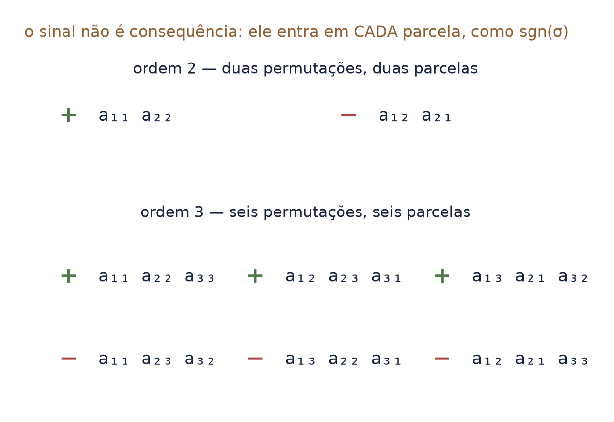
O número de parcelas de \(\det(A)\) é \(n!\). Calcular um determinante pela definição fica trabalhoso em demasia já a partir de \(n = 3\).
Ordem 2 pede 2 parcelas. Ordem 3 pede 6. Ordem 4 já pede 24, e ordem 5, 120.
A faixa verde da figura marca onde a regra de Sarrus — o truque das diagonais que muita gente aprende — ainda dá conta. Ela para na ordem 3, e a folha das armadilhas mostra por quê.
a definição diz o que a coisa é com rigor total, e é inútil para calcular. Não é defeito: definir e construir são dois trabalhos diferentes, e só fizemos o primeiro. Falta a segunda metade.
E há um detalhe que quase ninguém nota: o sinal não é consequência do determinante. Ele está dentro da definição, como \(\operatorname{sgn}(\sigma)\). Guarde — é o assunto da metade deste deck.
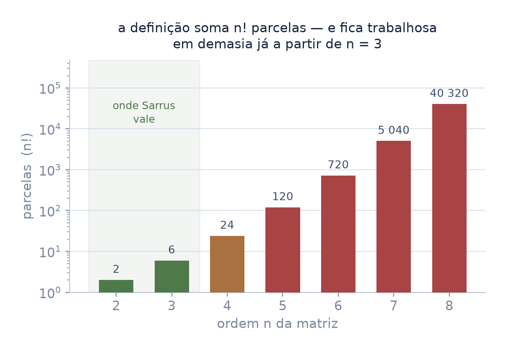
Mexer numa linha da matriz muda o determinante de um jeito conhecido. São só três mexidas possíveis, e cada uma tem o seu fator:
\(+1\) para somar a uma linha um múltiplo de outra:
\(L_i \to L_i + \lambda L_k\);
\(-1\) para trocar duas linhas: \(L_i \leftrightarrow L_j\);
\(\lambda\) para multiplicar uma linha por \(\lambda\):
\(L_i \to \lambda \cdot L_i\).
"ele i vira ele i mais lambda ele ká"; "ele i troca com ele jota"; "ele i vira lambda vezes ele i".
ninguém entregou a fórmula. Entregaram três fatos pequenos — e o método sai montado a partir deles. É o caminho oposto ao da definição, e chega no mesmo número.
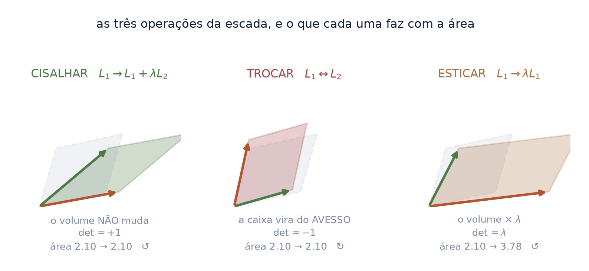
o cisalhamento é o que surpreende: a figura muda de forma e não perde volume. Empurre um baralho de lado — ele entorta e continua com o mesmo número de cartas.
Daí sai o método que os três fatos prometiam: escalone e multiplique os fatores. Nenhum \(n!\) — o custo vira o do escalonamento.
O método que os três fatos permitem montar tem um nome: escalonar. É aplicar aquelas mexidas, uma de cada vez, até a matriz virar uma escada — com zeros embaixo da diagonal.
Numa escada o determinante é fácil: multiplicam-se os números da diagonal. E cada mexida do caminho deixou para trás um fator conhecido — \(+1\), \(-1\) ou \(\lambda\).
escalone, guarde os fatores, multiplique tudo. Nenhum \(n!\): o custo passa a ser o do escalonamento. Na ordem 10, são cerca de mil contas em vez dos 3,6 milhões de parcelas que a definição pediria.
| matriz elementar | a matriz que executa uma das três mexidas quando multiplica. Cada mexida é uma delas — e o fator dela é o determinante dela |
Leia a matriz por colunas. Cada coluna é uma seta que sai da origem. Três setas em \(\mathbb{R}^3\) geram um paralelepípedo.
A pergunta do sistema linear deixa de ser "onde os planos se cruzam" e passa a ser: quanto preciso esticar cada seta para que, emendadas, elas cheguem em \(b\)?
é o "emendar e esticar" do primeiro seminário sendo cobrado. E \(|\det|\) responde se a caixa tem grossura suficiente para alcançar qualquer destino.
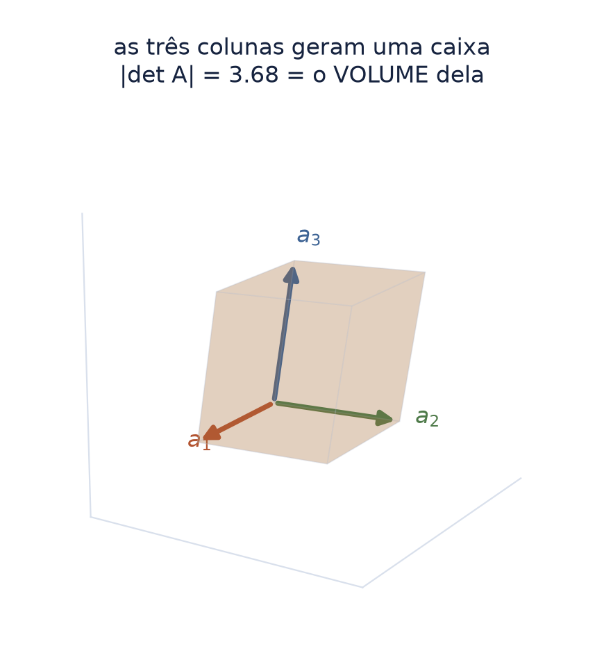
Zero não é "deu errado". Zero é uma informação geométrica precisa: as três setas caíram no mesmo plano.
o determinante não resolve o sistema. Ele diz, antes de resolver, em qual dos três mundos você está.
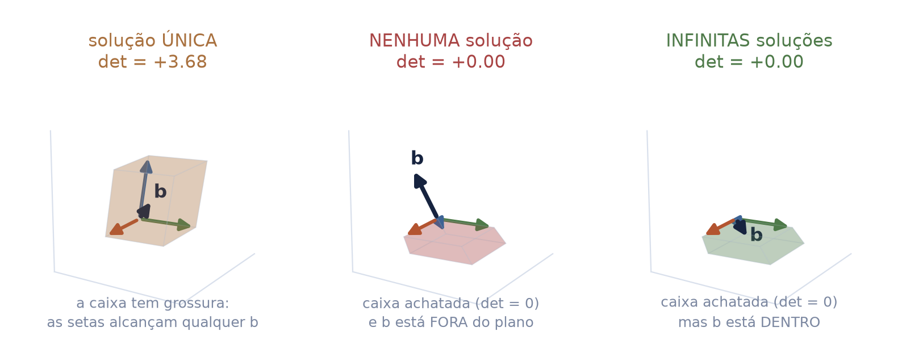
O primeiro seminário fazia \(k \cdot M\): multiplicar toda a matriz de pontos por um número. O determinante diz o que isso custa em espaço.
"determinante de ká vezes a identidade é igual a ká elevado a ene".
em 3D, \(k = 2\) dá \(2^3 = 8\). É por isso que dobrar o lado de uma caixa multiplica o material por oito, e não por dois — e por que um render em resolução dobrada custa quatro vezes mais pixels, não dois.
O determinante é multiplicativo em cada dimensão. É a primeira vez no curso em que uma potência aparece por necessidade geométrica, e não por convenção.
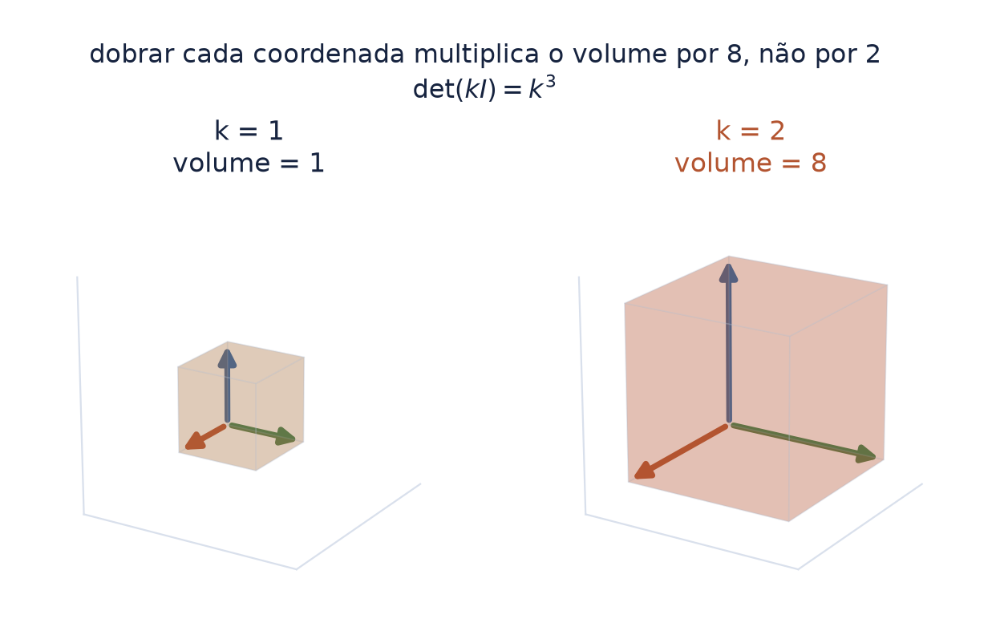
A próxima folha vai dizer que o sinal do determinante diz "de que lado". Para isso, três palavras precisam estar no lugar.
| trio de setas | as três colunas da matriz, lidas como três setas que saem da origem. Se elas não estiverem no mesmo plano, qualquer ponto do espaço se alcança emendando múltiplos delas — e o trio serve de referência para o espaço inteiro |
| orientação | a ordem em que as três setas são dadas, e o giro que ela define. Trocar duas de lugar inverte a orientação — e nada mais muda |
| normal | a seta que sai perpendicular a uma superfície, apontando para fora. É ela que diz ao programa de render qual é o lado de fora de cada pedaço da casca |
"de que lado" não é uma propriedade da caixa sozinha: é uma comparação. Só faz sentido dizer que um trio está invertido em relação a outro, escolhido antes como referência.
O módulo do determinante mede. O sinal orienta — e é a metade que o aluno costuma decorar sem nunca ver.
Se o determinante é positivo, o novo trio de setas tem a mesma orientação do trio de referência. Se é negativo, a orientação está invertida.
no ofício isso tem nome e tem dor: aplicar uma escala negativa num objeto 3D inverte as normais e a superfície renderiza pelo avesso. O sinal do determinante é exatamente esse aviso, dado antes do render.
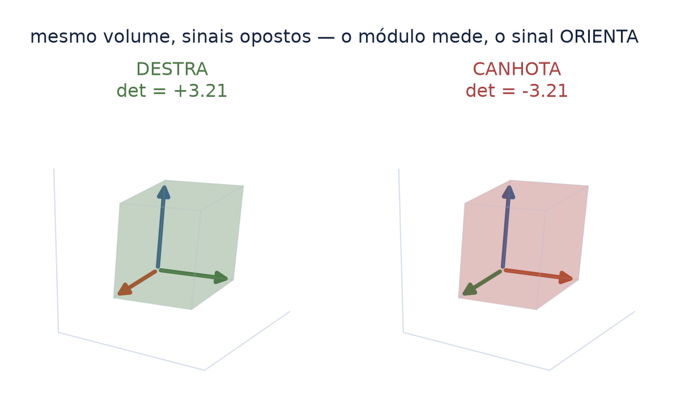
Volte à definição, algumas folhas atrás. Ela não calcula um número e depois pergunta que sinal ele tem: o sinal entra em cada parcela, junto com as casas escolhidas —
Cada embaralhamento das linhas traz consigo o registro de quantas trocas foram precisas. Par: \(+1\). Ímpar: \(-1\). E cada troca de linhas, vimos, é a caixa virando do avesso.
as duas portas estão dizendo a mesma coisa: a definição conta trocas dentro da soma; a construção conta trocas ao longo do escalonamento. É a mesma troca, vista de dois lugares. Quem aprende só por Sarrus não vê nenhum dos dois.
O sinal do determinante pressupõe que exista um "lado de fora" para comparar. Numa faixa de Möbius, não existe.
Caminhe pela fita com uma normal apontando para cima. Ao dar a volta completa, você chega ao ponto de partida com a normal apontando para baixo. A orientação não fecha.
É essa a diferença que a figura mostra: escolher o lado uma vez para a fita inteira — o sinal fixo — contra decidi-lo ponto a ponto. A próxima folha mede o que cada escolha custa.
não é curiosidade de museu: é o caso que prova que orientação é uma propriedade global, e que pode simplesmente não existir. Localmente há sempre dois lados; para a superfície inteira, às vezes não há nenhum.
A casa esbarrou nisso por acidente, produzindo uma cena para outro fim — e o acidente virou medida.
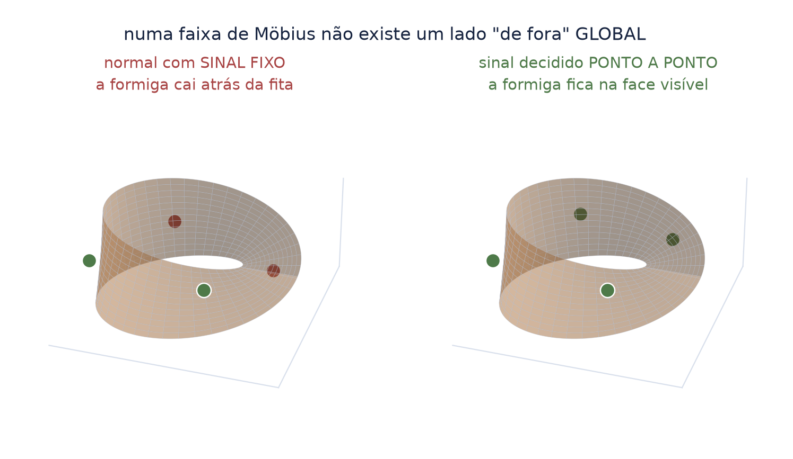
Ao pôr uma formiga caminhando sobre a normal da fita com o sinal fixo, ela caiu atrás da superfície em metade das posições. Medido em 2026-08-12, sobre uma silhueta de 1193 px:
a folha teria julgado uma formiga que a cena não contém. O conserto não é estético: é a regra de que o lado tem de ser decidido ponto a ponto, porque global não existe.
É o determinante ensinando pelo avesso: quando o sinal não pode ser escolhido de uma vez para a superfície inteira, ele deixa de ser um número e vira uma função do lugar.
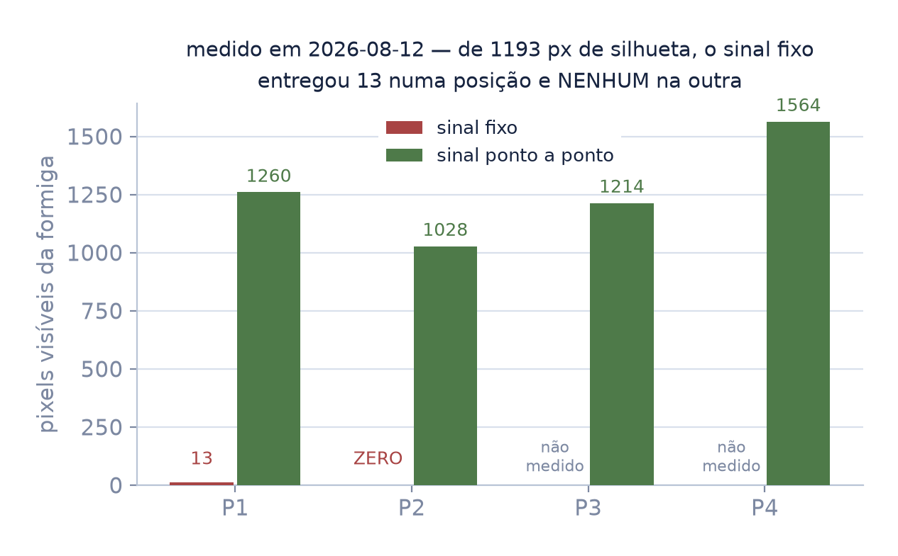
Há uma forma de calcular determinantes somente para o caso de matrizes \(3\times3\): a regra de Sarrus — o truque das diagonais, o mais usado de todos.
O truque das diagonais parece se estender ao \(4\times4\). Não se estende — e o erro não é pequeno:
errou o valor e o sinal. A razão é aritmética: o \(4\times4\) tem 24 parcelas e as diagonais entregam 8. Dezesseis somem sem avisar.
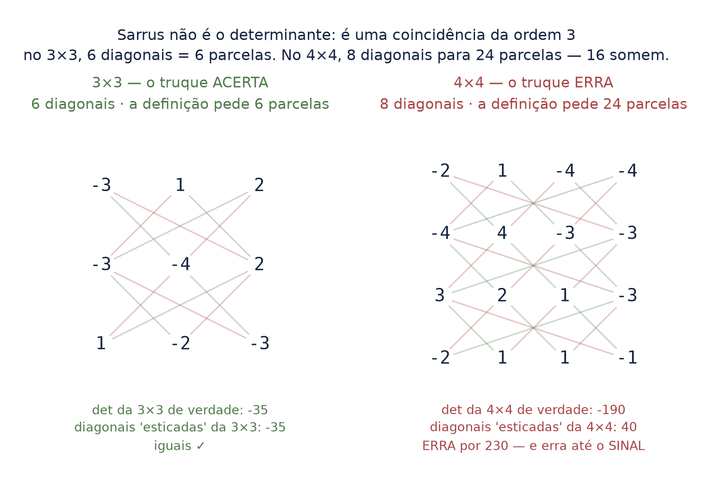
Cuidado: o determinante da matriz dos pontos — a que traz as coordenadas de cada ponto numa linha — ser nulo não quer dizer que os pontos estejam alinhados, isto é, sobre uma mesma reta.
O contraexemplo mínimo: \(O = (0,0,0)\), \(P = (1,1,0)\), \(Q = (1,1,1)\). A matriz tem uma linha nula, logo determinante zero — e os três pontos não estão numa reta.
o que o zero denuncia é outra coisa. Os vetores-posição — as setas que vão da origem até cada ponto — são coplanares: cabem todos num mesmo plano. E como saem da origem, esse plano passa pela origem. Já o alinhamento se testa com as setas de um ponto ao outro, \(\overrightarrow{AB}\) e \(\overrightarrow{AC}\), não com as coordenadas cruas.
É o erro clássico de aplicar uma ferramenta certa à pergunta errada.
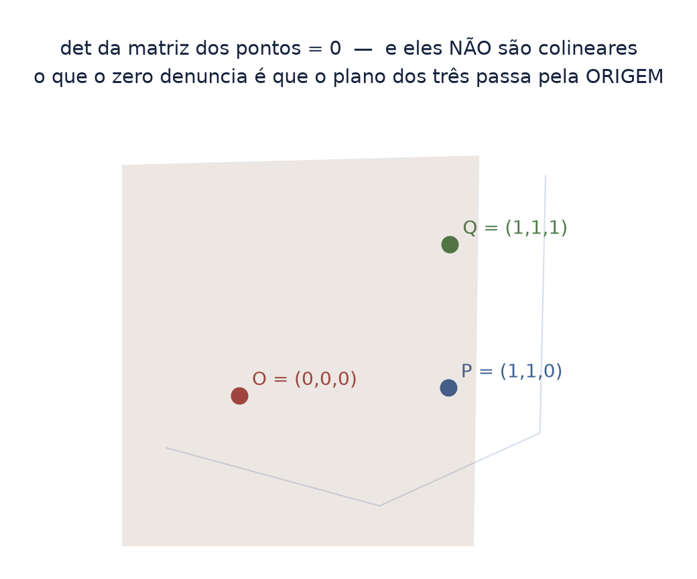
Pregar uma imagem nos quatro cantos de uma superfície em perspectiva — uma tela, um cartaz, um monitor dentro da cena — é das operações mais comuns do ofício. No programa ela se chama corner pin; na matemática, homografia.
A imagem é plana, mas a matriz tem três linhas. A terceira é o que a perspectiva exige: além de dizer para onde cada ponto vai, é preciso dizer quanto ele encolheu por estar longe.
| \(w\) | o divisor da perspectiva: \(w = h_{31}x + h_{32}y + h_{33}\). Ele muda de ponto para ponto — é o que faz o longe encolher e o perto crescer |
| \(h_{31}\) | a entrada da linha 3, coluna 1, de \(H\) — a convenção da folha das letras |
é \(w\) quem faz a conta variar dentro do mesmo quadro. Se ele fosse constante, a imagem toda esticaria igual — e não haveria nada para medir.
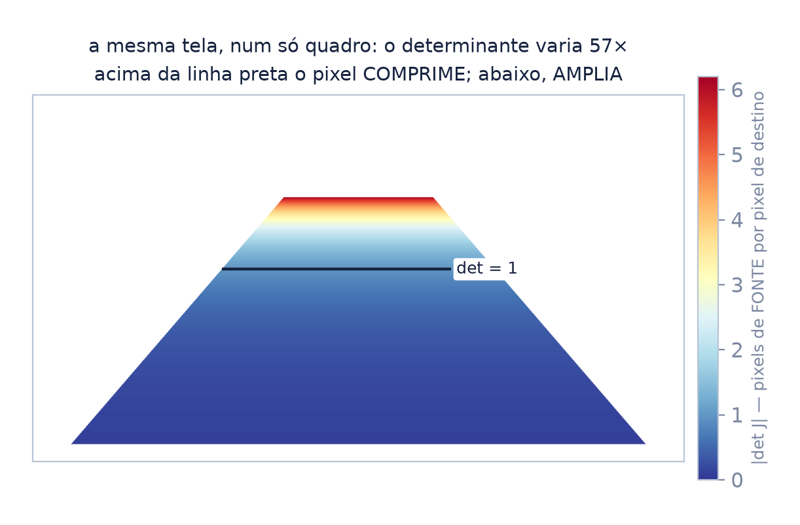
Um corner pin — prender uma imagem nos quatro cantos de uma superfície em perspectiva — é uma das operações mais comuns do ofício. E é uma matriz \(3\times3\): uma homografia.
Ela não estica igual em todo lugar. Perto, a imagem amplia; longe, comprime. Quanto? A conta é o determinante do jacobiano:
o jacobiano é "a matriz que diz como o mapa estica bem ali". O determinante dela é quanta área aquele pedacinho ganha ou perde. É a caixa colorida outra vez — só que uma caixa por pixel.
Um insert de \(960\times540\) pregado numa superfície em fuga dentro de um quadro \(1920\times1080\). Medido:
Acima da linha preta o pixel de destino come mais de um pixel de fonte — comprime. Abaixo, come menos de um — amplia.
não existe "um" fator de escala para a imagem inteira. Existe um por pixel, e eles diferem por mais de cinquenta vezes dentro do mesmo plano. Qualquer filtro de largura fixa vai estar errado em algum lugar do quadro — a única dúvida é onde.
| amostrar | para cada pixel do destino, ir buscar a cor na imagem de origem. É o que toda deformação faz |
| filtro | quantos pixels da origem entram nessa busca, e com que peso. A largura do filtro é o tamanho do balde |
| serrilhado | o degrau que aparece quando o balde é pequeno demais e o detalhe fino da origem entra inteiro num pixel só |
| supersamplear | calcular numa grade muito mais fina — aqui \(8\times8\) por pixel — e só depois reduzir. Serve de verdade de referência para medir o erro dos outros |
| mip-map | a pilha de versões já reduzidas da mesma imagem, guardadas de antemão. Quando o destino comprime, pega-se a versão já pronta em vez de refazer a conta |
e uma pergunta que a próxima folha responde com número: se o determinante mede quanta área o pixel ganhou, e a largura do filtro é um comprimento, o que liga os dois é a raiz quadrada — é por isso que o filtro se dimensiona por \(\sqrt{\det}\), e não por \(\det\).
Dois amostradores contra a mesma verdade supersampleada \(8\times8\): um de largura fixa, outro com a largura dimensionada por \(\sqrt{\det}\). O resultado, medido:
alargar o balde só ajuda quando há o que peneirar. É exatamente por isso que o mip-map existe e por que nenhum renderizador alarga o filtro na ampliação.
Nas bordas do quadro — onde \(\det\) passa de 4 — o filtro fixo erra 4,6× mais que o dimensionado. É onde a tela em fuga cintila.
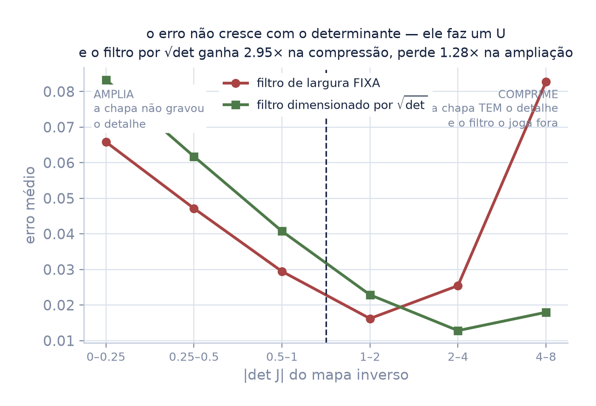
O determinante não diz quanto erro você vai ter. Diz qual dos dois você está prestes a cometer — e conserta só um deles.
é a mesma lição do primeiro seminário, num lugar novo: a hipótese que passa despercebida numa linha de texto produz, no Nuke, imagem visivelmente errada.
Este seminário ocupa três nós do mapa — matrizes, sistemas lineares e o determinante. Eles andam juntos porque o determinante não é uma conta sobre a matriz: é a resposta sobre o sistema.
E entra por dois caminhos, um deles inesperado: a álgebra elementar, que dá a letra, e a contagem. O determinante cobra raciocínio combinatório — é uma soma sobre todas as permutações, e é por isso que o G1 vem antes.
do outro lado ele paga em transformações lineares e autovalores, que são do G4. O que se constrói aqui é cobrado lá, inteiro.
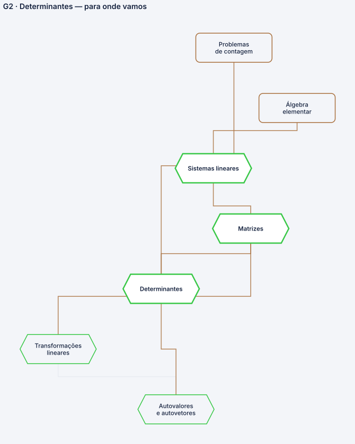
Nenhum deles é decoração: cada um foi introduzido com o conceito que carrega, e volta aqui só para conferência.
| \(\det(A)\) | o determinante de \(A\) — um número, não uma matriz |
| \(\sigma\) | lê-se "sigma": uma permutação, um jeito de embaralhar índices |
| \(\operatorname{sgn}(\sigma)\) | o sinal da permutação: \(+1\) se par, \(-1\) se ímpar |
| \(n!\) | lê-se "ene fatorial": \(n \times (n-1) \times \cdots \times 1\) |
| \(|\det A|\) | o módulo: o volume, já sem a informação de lado |
| \(a_1,\, a_2,\, a_3\) | as colunas de \(A\), lidas como três setas que saem da origem |
| \(\sum_{\sigma}\) | o sigma grande manda somar; o \(\sigma\) embaixo diz o que varia — uma parcela por permutação |
| \(\sigma(1)\) | a coluna escolhida na linha 1. O parêntese aplica, não multiplica |
| \(L_i \leftrightarrow L_j\) | trocar a linha \(i\) com a linha \(j\) |
| \(\lambda\) | lê-se "lambda": aqui, o número que multiplica uma linha |
| \(I\) | a matriz identidade — a que não mexe em nada |
| \(J\) | o jacobiano: a matriz que diz como um mapa estica naquele ponto |
| \(H\) | a homografia: a matriz \(3\times3\) do corner pin |
| \(w\) | o divisor da perspectiva — é o que faz \(\det J\) mudar de pixel para pixel |
| \(\sqrt{\det}\) | a raiz do determinante: de área para comprimento, que é o que a largura de um filtro pede |
toda figura deste deck sai de script no repositório, e todo número tem recibo com data. Nenhuma depende de arquivo fora desta pasta.
quanto espaço as setas geram — e de que lado
O módulo mede o volume: se ele é zero, o sistema perdeu uma dimensão. O sinal orienta: se ele vira, a caixa está do avesso — e as normais também.
E quando a superfície é uma faixa de Möbius, a segunda pergunta simplesmente não tem resposta global. O sinal deixa de ser um número e vira uma função do lugar.